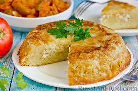
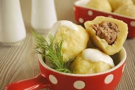
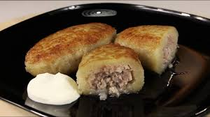
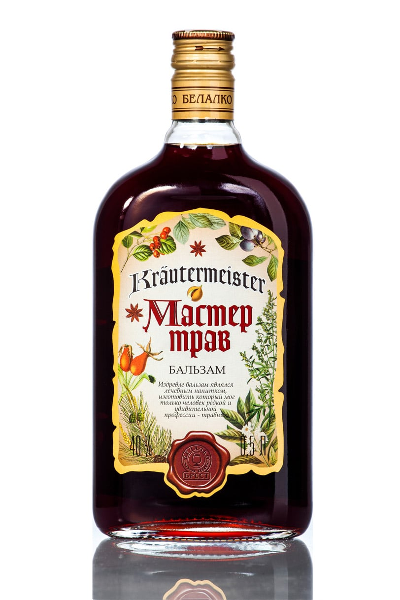
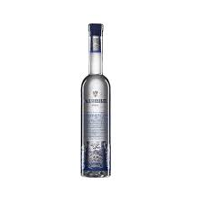
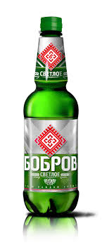
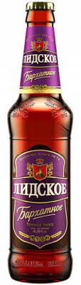
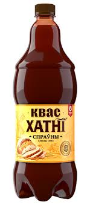
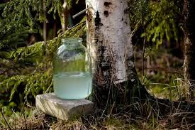
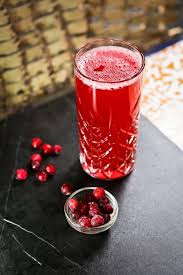

ВКУСНЫЙ БОБРУЙСК
🍽️ Блюда
Картофельная бабка
Традиционное блюдо из тёртого картофеля с мясом, запеченное в печи. Подается со сметаной, отлично сочетается с квасом. Вкуснейшая запеканка, которую можно попробовать только в регионе.
Колдуны
Картофельные зразы с мясной начинкой (фаршем), обжаренные до золотистой корочки. Одно из самых сытных и популярных блюд региона. Подаются со сметаной.
Клёцки с мясом
Небольшие картофельные шарики (клёцки) с мясной начинкой. Подаются в бульоне или со сливочным соусом. Традиционное, сытное и очень вкусное блюдо.
🥃 Водка
Бобруйская Люкс

Местный сорт водки, производимый на Бобруйском заводе "Красный пищевик" или его партнерами. Традиционный рецепт, символ местной алкогольной продукции. Символ местной алкогольной продукции.
Бобруйский Бальзам
Бальзам, настоянный на травах и ягодах, производимый в регионе. Отлично подходит в качестве добавки к кофе или чаю. Отличный травяной бальзам.
Радзивилл
Бренд, ассоциирующийся с историей Могилевской области и ее дворянскими традициями. Премиальный продукт с высокой степенью очистки, популярный среди местного населения. Бренд с высокой степенью очистки.
🍺 Пиво
Бобров
Популярный местный бренд, светлое пиво с чистым и освежающим вкусом. Хорошо сочетается с шашлыком и копченой рыбой. Популярный местный светлый напиток.
Лидское Бархатное
Темное бархатное пиво с легкой сладостью и карамельными нотками. Классика белорусского пивоварения, идеально для неспешного употребления. Темное пиво с карамельными нотками.
Криница-1

Светлое пиво с насыщенным солодовым вкусом. Популярно как сытный вариант пива для холодной погоды. Пиво с насыщенным вкусом.
🧉 Напитки (Другие)
Квас Бобруйский
Хлебный квас местного производства, считается одним из лучших в Беларуси. Отлично утоляет жажду и используется как основа для холодника. Один из лучших хлебных квасов.
Берёзовый сок
Натуральный весенний напиток, собранный в лесах региона. Легкий, слегка сладковатый, очень полезный. Натуральный весенний напиток.
Морс клюквенный
Традиционный безалкогольный напиток из ягод клюквы. Богат витаминами, подается охлажденным. Традиционный клюквенный морс.